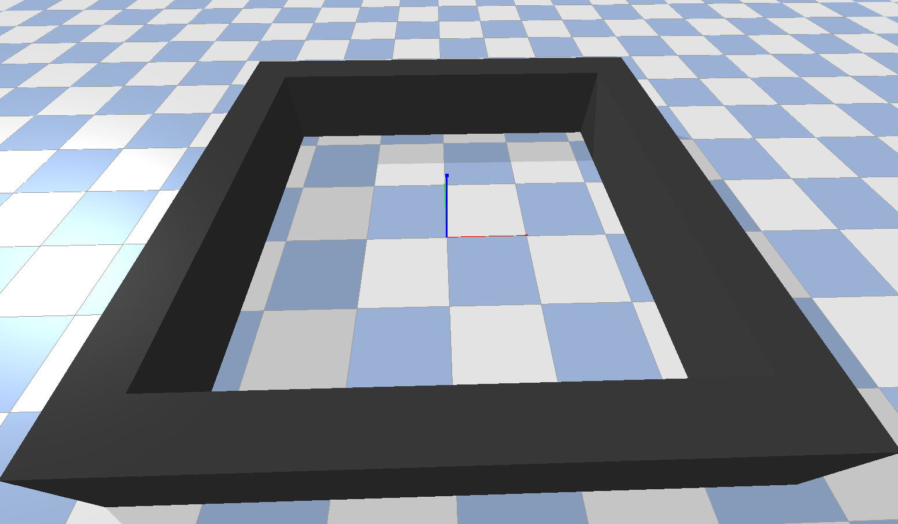
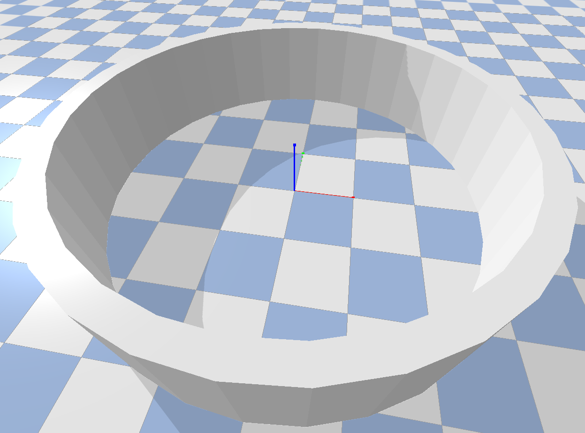
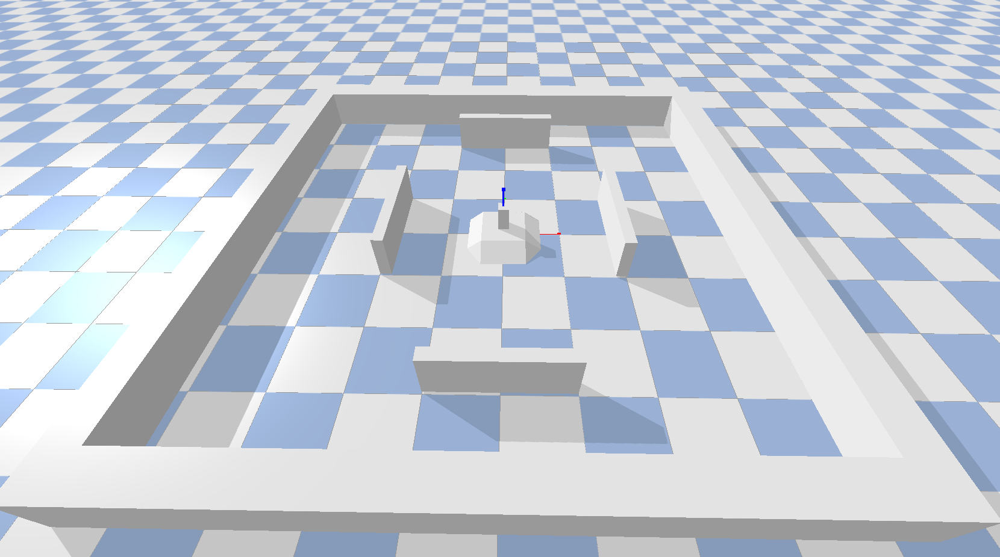

Worlds and Entities¶
Worlds¶
The world or environment is the most basic part of the simulation where the robots move and interact.
The main function of World classes is to act as containers and orchestrators of the simulation.
Essentially, it stores all the entities (like robots, walls, lights, etc) that have been added to the simulation.
The class property used to store all the entities is called hierarchy, and it is a dict mapping entity names to
entity python objects. Another feature that is important to introduce at this point are entity groups. As its name describes,
groups arrange multiple entities (normally homogeneous entities) into a single set. In this way, the simulator can apply collective
operations to all the members of the group jointly. The clearer use case of groups is related to position states initialization, so that
the sampling of positions can be done as a group. For instance, the positions of an static swarm of mobile robots can be randomly sampled
using an random spatial graph generator to preserve swarm compactness (see spike_swarm_sim.utils.initializers.RandomGraphInitializer).
Note
The name hierarchy of the property used to store the registered entities may be changed to a more appropriate name
in future versions.
Additionally, the world class also has access to a physics engine responsible of realistically simulating object physics, collisions and rendering the simulation. We will get back to physics engines further in this section. When creating a new simulation process, the world is the first object that must be instantiated. Thereafter, the main steps to accomplished in most simulations are the following:
Create and register the entities: before setting up the world simulation, the user must create and register all the entities and objects that will take part of the simulation. There are two ways of registering entities: using the method
register_entityto register entities one by one or the methodbuild_from_dictto create and record all the entities at once. In the former case, the user must manually create the entity (importing and using the corresponding python class) beforehand. On the contrary, the latter scenario internally creates the instance of every requested entity. Nonetheless, when usingbuild_from_dictthe entities and their parametrization must be provided as a large pythondict. The structure of the mentioneddictwill be clarified in the examples along this tutorial or in the Configuration Files tutorial section.Connect: once all the entities have been suitably registered, it is compulsory to call the
connectmethod of the World class. It essentially prepares the world execution and connects to the physics and render engines. Aside from directly executing theconnectmethod, it is also possible to connect to the world by means of a context manager (we will see examples later). In such a case, the connection is established internally and theconnectmethod can be ignored.Reset the simulation states: the last step before actually simulating environments is to reset the world by calling the method
World.reset. This operation drives all the registered entities to their initial state (e.g. initial positions, orientation, etc). Unless a seed is specified, the initialization of most states and variables (particularly positions and orientations) may be random and different in each call. Even though we have not introduced the term yet, it is important to remember that the reset operation executes the registered initializers of groups of entities to greatly customize their initial states (we will get back to initializers later on this section).Simulation step: runs a simulation iteration. It can be uniquely accomplished by calling the
World.stepmethod. Its main phases are: (i) call theRobot.stepmethod of every robot (which, in turn, read from the sensors, execute the controller and plan actions), (ii) compute rewards (if required), (iii) apply perturbations to the state and/or the actions of the robots (if required), (iv) step robot actuators and (v) execute the physics and render engine simulation step.Disconnect: disconnect the physics and render engine by means of the
World.disconnectmethod. Call this method when the simulation is ended. The method is called automatically when using world class as context manager.
Lets clarify all the previous phases using a very simple initial example:
Example 1.1:
>>> world = SquareArena(height=10, width=10) # Create the world
>>> robot = Epuck([0,0,0], [0,0,0]) # Create a robot at the arena origin
>>> world.register_entity('swarm_member_1', robot, group='swarm') # Register the robot in the simulation
>>> with world: # Context manager to automatically connect and disconnect.
>>> world.reset()
>>> for t in range(2000):
>>> world.step() # Step a single simulation iteration.
In this example we have created a square arena of 10x10 with a single e-puck robot. The robot is positioned at coordinates
[0,0,0] and with Euler orientation [0,0,0]. Thereafter, the robot is registered using the method World.register_entity
with the name 'swarm_member_1' and attached to the group 'swarm'. Notice that in this simple example the robot is the only member of the group.
The simulation is set up using the world as a context manager, so that the World.connect and World.disconnect methods are called
internally. After resetting the world dynamics, the simulation is run for 2000 discrete time instants.
Apart from the previously introduced main methods, the class World also has the methods summarized in the following table (for a detailed explanation
see the API reference spike_swarm_sim.world.World):
Method |
Description |
|
Sets and attaches the initializer of positions and orientations to a given group. Every time that the method
|
|
|
|
Returns a |
|
Returns the group of a given entity. |
|
Returns a |
|
Returns a |
|
Returns a |
|
Returns a |
|
Returns a |
|
Returns a |
|
Returns a |
|
Returns a |
|
Returns a |
|
Returns a |
|
Set the focus of the camera of the render engine on the position of an entity. |
All the core functionalities of worlds is implemented in the spike_swarm_sim.world.World base class. Nonetheless, this class is not
thought to be instantiated directly as it just creates a completely empty world with merely a plane as floor. Besides, it is advisable to create the world
using one of the higher level classes that inherit from World base class. In brief this classes are:
Reference Name |
Python Class |
Description |
square_arena |
World arena limited by 4 walls forming a square area. |
|
circular_arena |
World arena limited a single circular wall forming a cicle area. |
|
custom_world |
World that can be highly customized by the user to any 3D map, arena or maze.
The only requirement is that the 3D mesh must have been previously created and stored
in the ‘spike_swarm_sim/models/maps/’ directory.
|
The following screenshots depict each of the currently implemented world classes:

Square Arena

Circle Arena

Custom World
Entities¶
Entities are any kind of world objects that are created in the world or environment space. Jointly with the physics and render engine, they
define the variety experiments to be carried out. Every entity defined in the simulator inherits from the class spike_swarm_sim.objects.world_object.WorldObject.
This base class should not be directly instantiated. Even thought their names are descriptive, the
following table defines the currently implemented entity properties:
Property |
Description |
|
Whether the object has collisions or not. |
|
Whether the object is static or can move. |
|
Whether the object emits light or not. |
|
Whether the object has a controller or not. |
|
Whether the object controller can be trained (not really used yet). |
Aside from the previous entity properties, there are several methods that are worth mentioning (see API reference for further details
spike_swarm_sim.objects.world_object.WorldObject):
Method |
Description |
|
Steps the entity control loop. This method is only implemented in those entities with sensors,
controller and actuators.
|
|
Resets the dynamics of the entity. If entity is controllable it also resets the controller. This method is not
implemented in the
WorldObject base class. |
|
Gets the current position coordinates of the entity. |
|
Gets the current Euler orientation of the entity. |
|
Gets the current linear velocity of the entity. |
|
Gets the current angular velocity of the entity. |
|
Sets the current position coordinates of the entity. |
|
Sets the current Euler orientation of the entity. |
|
Sets the current linear velocity of the entity. |
|
Sets the current angular velocity of the entity. |
|
Gets the unique identifier of the entity. |
|
Sets the unique identifier of the entity (Use this method carefully). |
When creating entities, in order to establish a 3D model for physics interactions and visualization, each class that inherits from WorldObject
must provide an existing URDF file describing its geometry, visuals, collision, inertial, etc. In the case of robots, the URDF also specifies the links
and joints of the robot. The URDF files must be stored in the directory ‘spike_swarm_sim/models/entities/’.
Note
Even though its implementation is currently in process, for creating 2D entities for the pymunk based physics engine (spike_swarm_sim.physics_engine.Engine2D),
we established a simple yet easily extensible JSON module syntax. An example of a JSON file modelling a simplified 2D epuck is shown in epuck.json .
The precise entities that are currently implemented in the simulator are gathered in the following table:
Reference Name |
Python Class |
Description |
Image |
robot |
Robot |
Generic robot class. It should not be directly
instantiated.
|

|
light_source |
LightSource |
Point light source omnidirectionally emitting light
of a custom color.
|

|
wall |
Wall |
Wall of customizable sizes. |
|
ground_area |
Ground Area |
Floor cicular ground area of a customizable color and
radius.
|
|
cube |
Cube |
Cube of a customizable side length, color and mass. |

|
ball |
Ball |
Ball of a customizable radius, color and mass. |
|
epuck |
Epuck |
Mobile Robot simulating the e-puck. |
For the moment the only implemented robot is the e-puck (spike_swarm_sim.objects.robot3D.Epuck). Nonetheless, in order to create a custom robot,
the main and most laborious part is to create the 3D mesh obj files and the URDF file describing its whole 3D model. Aside from that, the
class can be readily coded as follows:
Example 1.2:
>>> @world_object_registry(name='minitaur')
>>> class Minitaur(Robot):
>>> """ Class for the Minitaur robot. """
>>> def __init__(self, *args, **kwargs):
>>> super(Minitaur, self).__init__(*args, model_file='quadruped/minitaur', z_offset=0.5,**kwargs)
In this case, the examples creates the class corresponding to the minitaur robot using the 3D model supplied by the pybullet library. The decorator establishes the reference name used in the configuration files to refer to the entity. We address the topic of reference names in the following subsection.
In order to create the entities, it must be also specified the initial position and the initial orientation. The orientation can be defined as a 3D Euler angle (roll, pitch, yaw) or as an scalar angle (only using yaw). In both cases the units of the orientations are in radians. If the entity is controllable, the previously instantiated controller is also supplied as a kwarg to the class constructor.
Now that we have introduced the entities, lets extend the Example 1.1:
Example 1.3:
>>> world = CircularArena(radius=5) # Create the world
>>> # Create controller and define sensors
>>> ctlr1 = BasicObstacleAvoider()
>>> ctlr2 = BasicObstacleAvoider()
>>> for ctrl in [ctlr1, ctlr2]:
>>> ctlr.add_sensor({"distance_sensor" : {"n_sectors" : 8, "range" : 1}})
>>> ctlr.add_actuator({"joint_velocity_actuator" : {"joint_ids" : [0, 1], "max_velocity" : 5}})
>>> # Create objects instances
>>> robot1 = Epuck([0,0,0], 0, controller=ctlr1)
>>> robot2 = Epuck([1,0,0], 3.14, controller=ctlr2)
>>> cube = Cube([2,2,0], 0, color='blue', mass=1, side_len=0.2)
>>> ball = Ball([2,-2,0], 0, color='red', mass=1, radius=0.3)
>>> yellow_ls = LightSource([0, 2, 1], 0, color='yellow')
>>> # Add objects to world
>>> world.register_entity('swarm_member_1', robot1, group='swarm')
>>> world.register_entity('swarm_member_2', robot2, group='swarm')
>>> world.register_entity('cube', cube, group='geom_objects')
>>> world.register_entity('ball', cube, group='geom_objects')
>>> world.register_entity('light_yellow', yellow_ls, group='lights')
>>> # Connect, reset and run simulation.
>>> with world: # Context manager to automatically connect and disconnect.
>>> world.reset()
>>> for t in range(2000):
>>> world.step() # Step a single simulation iteration.
In this example we have created a circular arena with 2 robots, a blue cube, a red ball and a yellow light. Even though we
have not yet introduced them, in order to build a more interesting example the robots are controlled by a basic obstacle avoidance
controller. Moreover, they are equipped with the distance sensor (spike_swarm_sim.sensors.distance_sensor.DistanceSensor) to detect nearby obstacles
and with the joint velocity actuator (spike_swarm_sim.actuators.joint_actuator.JointVelocityActuator) to control the velocity of the two joints (one per
wheel).
Note
An important remark is that the z-axis coordinate of the light sources position has an implicit offset of 0.8m, which is fixed in the URDF file (spike_swarm_sim/models/entities/light_source/light.urdf). Therefore when creating a light, its z-coordinate is actually z+0.8 to guarantee a minimum light height.
Initializers¶
Now, lets return to the entity initializers. Initializer are python classes that noticeably ease the selection of entity initial states of
the positions and the orientations. For example it allows to sample positions uniformly within a square without physical overlapping or
sample the 2D coordinates of robots in a swarm as a 2D spatial random graph (assuring swarm compactness).
Initializers work at the group level, meaning that they initialize the positions and orientations considering whole groups of entities.
This remarkably useful for avoiding initial overlapping or creating compact swarms of robots. The mapping between group names and initializers
is an attribute of the class World that holds all the groups and entities. This attribute is called initializers of type dict.
An pseudocode example of the content of this attribute is exposed below:
Example 1.4:
>>> world.initializers = {
>>> 'swarm' : {
>>> 'positions' : Initializer1,
>>> 'orientations' : Initializer2,
>>> },
>>> 'cubes' : {
>>> 'positions' : Initializer3,
>>> }
>>> }
Note that Initializer1, Initializer2 and Initializer3 are not actual classes. In practice, they should be instances of any of the
available Initializer classes.
The initializer classes that are currently implemented within the simulator are:
Reference Name |
Python Class |
Description |
fixed |
|
Initializes the positions or orientations always at the given fixed values. |
fixed_random |
|
Randomly initializes the positions or orientations from a list of fixed possible values. |
random_uniform |
|
Randomly initializes objects positions within a rectangle area (positions) or a segment orientations(). |
random_circle |
|
Randomly initializes objects positions within a circle area. |
random_circumference |
|
Randomly initializes objects positions embedded in a circumference. |
random_graph |
|
Randomly initializes objects positions as a random spatial graph. |
grid |
|
Deterministically initializes objects positions within a 2D regular lattice or grid. Todo Not implemented yet |
Finally, lets learn how initializers are used with an example. In this example we will use API to create manually the simulation, examples using the
method World.build_from_dict to construct the whole simulation using dict objects will be provided in the next subsection (as we need to
understand how reference names work firstly).
For the moment lets focus on the following example:
Example 1.5:
>>> world = CircularArena(radius=5) # Create the world
>>> n_robots = 5 # Number of robots in the group 'swarm'.
>>> # Create and register initializers
>>> ini_ori = RandomUniformInitializer(n_robots, low=0, high=6.28, size=1, engine='3D', variable='orientations')
>>> ini_pos = RandomUniformInitializer(n_robots, low=[-3,-3], high=[3,3], size=2, engine='3D', variable='positions')
>>> for i, (pos, ori) in enumerate(zip(ini_pos(), ini_ori())):
>>> ctlr = BasicObstacleAvoider()
>>> ctlr.add_sensors_from_dict({"distance_sensor" : {"n_sectors" : 8, "range" : 1}})
>>> ctlr.add_actuators_from_dict({"joint_velocity_actuator" : {"joint_ids" : [0, 1], "max_velocity" : 13}})
>>> ent = Epuck(pos, ori, controller=ctlr)
>>> world.register_entity('swarm_' + str(i), ent, group='swarm')
>>> # Set the initializer so that it is executed every time that the ``World.reset`` method is called.
>>> world.set_initializer('swarm', ini_pos, initializer_ori=ini_ori)
>>> # Connect, reset and run simulation.
>>> with world: # Context manager to automatically connect and disconnect.
>>> world.reset()
>>> for t in range(2000):
>>> world.step() # Step a single simulation iteration.
In the example we have created a group called 'swarm' with 5 robots and with the following initialization:
Positions: are sampled randomly from the hypercube \(\,[-3,\,3]^2\).
Orientations: are sampled randomly from an uniform distribution \(\,\mathcal{U}(0, 2\pi)\).
Additionally, notice that, once created, the initializers are registered in the world and mapped to the corresponding group
using the method spike_swarm_sim.world.World.set_initializer().
Once created, the initializer object can be called (e.g. ini_pos()). This action returns an iterable with the positions or
orientations of all the group objects (with length equal to the group size).
Lastly, there is another important method that is not mentioned in the previous example. This method is spike_swarm_sim.world.World.run_initializers(),
which is called every time that the world is reset. Its functionality is to call the initializer of every group and set the entity position and orientation (if required)
to the new initial state.
There is no actual need to call this method outside of the source code, because it is automatically executed within the reset method. Nonetheless, it
is worth mentioning for completeness.
Reference Names¶
Reference names are a critical part of the simulator when using configuration files or creating entities by means of the World.build_from_dict method.
In brief, reference names identify classes or functions through string names. Thereafter, the user can refer them within the configuration file or the configuration
dict using this reference names. If a class has no reference name, it cannot be pointed in configuration files. Even through we have not explained this topic up
to this point, we have already shown several reference names attached to worlds, entities or initializers in previous tables of this section. For example, the reference
name of the classes SquareArena, Epuck and RandomUniformInitializer are 'square_arena', 'epuck' and 'random_uniform', respectively.
Lets redo the Example 1.5 using the build_from_dict method and reference names (the final simulation should be equivalent):
Example 1.6:
>>> world = CircularArena(radius=5) # Create the world
>>> n_robots = 5 # Number of robots in the group 'swarm'.
>>> world_cfg = {
>>> "engine" : "3D",
>>> "objects" : {
>>> "swarm" : {
>>> "type" : "epuck",
>>> "num_instances" : n_robots,
>>> "controller" : "basic_obstable_avoider",
>>> "sensors" : {
>>> "distance_sensor" : {"n_sectors" : 8, "range" : 1}
>>> },
>>> "actuators" : {
>>> "joint_velocity_actuator" : {"joint_ids" : [0, 1], "max_velocity" : 13}
>>> },
>>> "initializers" : {
>>> "positions" : {"name" : "random_uniform", "params" : {"low": [-3,-3], "high" : [3,3] 'size':2}}
>>> "orientations" : {"name" : "random_uniform", "params" : {"low": 0, "high" : 6.28, 'size':1}}
>>> },
>>> }
>>> }
>>> }
>>> world.build_from_dict(world_cfg)
>>> # Connect, reset and run simulation.
>>> with world: # Context manager to automatically connect and disconnect.
>>> world.reset()
>>> for t in range(2000):
>>> world.step() # Step a single simulation iteration.
As it can be seen, we have used several reference names: "epuck", "basic_obstable_avoider", "distance_sensor", "joint_velocity_actuator"
and "random_uniform". A detailed list of the reference names of sensors, actuators and controllers will be provided in their corresponding section.
Nonetheless, the reference name is always specified on top of the corresponding class or function header as a parameter of a decorator (we will get back to
this in a moment). Regarding the meaning of the configuration fields, we redirect to Configuration Files section.
Besides knowing how to use them, it is important to understand how they internally work.
In order to register a class of function with a certain reference name, a decorator must be placed on top of the class or function header.
The decorator receives a single argument name, which corresponds to the reference name to be fixed.
Note
The reference name can be any string, but it is advisable to select a name related to the class, in lowercase and with underscores to separate words.
Some examples are the following:
Example 1.6:
>>> @world_object_registry(name='ball')
>>> class Ball(WorldObject):
>>> @controller_registry(name='basic_obstable_avoider')
>>> class BasicObstacleAvoider(RobotController):
>>> @sensor_registry(name='distance_sensor')
>>> class DistanceSensor(DirectionalSensor):
>>> @actuator_registry(name='joint_velocity_actuator')
>>> class JointVelocityActuator(Actuator):
>>> @world_registry(name='custom_world')
>>> class CustomWorld(World):
Notice that the decorator is different depending on the class to be registered. In fact, the implemented decorators are gathered and briefly described in the following table:
Decorator |
|
Description |
|
|
Register decorator for world classes. |
|
|
Register decorator for entity or world object classes. |
|
|
Register decorator for sensor classes. |
|
|
Register decorator for actuator classes. |
|
|
Register decorator for controller classes. |
|
|
Register decorator for initializer classes. |
|
|
Register decorator for state or action perturbation classes. |
|
|
Register decorator for communication system classes. |
|
|
Register decorator for fitness function classes. |
|
|
Register decorator for optimization algorithm classes. |
|
|
Register decorator for reward generator classes. |
|
|
Register decorator for neuron model classes. |
|
|
Register decorator for synapse model classes. |
|
|
Register decorator for ANN input encoder classes. |
|
|
Register decorator for ANN output decoder classes. |
|
|
Register decorator for ANN local learning rules (e.g. Hebbian) classes. |
|
|
Register decorator for evolutionary operator functions (crossover, mutation, etc). |
|
|
Register decorator for ANN input receptive field classes (only if spiking neural nets). |
These decorators are coded in the module spike_swarm_sim.register.py. Its basic functioning is that when the decorated class is instantiated, the decorator
function is called once, registering in a global dict (see second column of the table) the mapping between the reference name and the python class.
Subsequently, to obtain the class corresponding to a given reference name (for example when decoding the configuration files), the user just has to import
the correct dict and access the python class using the reference name as key:
Example 1.7:
>>> from spike_swarm_sim.register import worlds
>>> print(worlds['custom_world'])
>>> Console:
>>> <class 'spike_swarm_sim.world.CustomWorld'>
>>> print(worlds)
>>> Console:
>>> {
>>> 'square_arena': <class 'spike_swarm_sim.world.SquareArena'>,
>>> 'circular_arena': <class 'spike_swarm_sim.world.CircularArena'>,
>>> 'custom_world': <class 'spike_swarm_sim.world.CustomWorld'>
>>> }